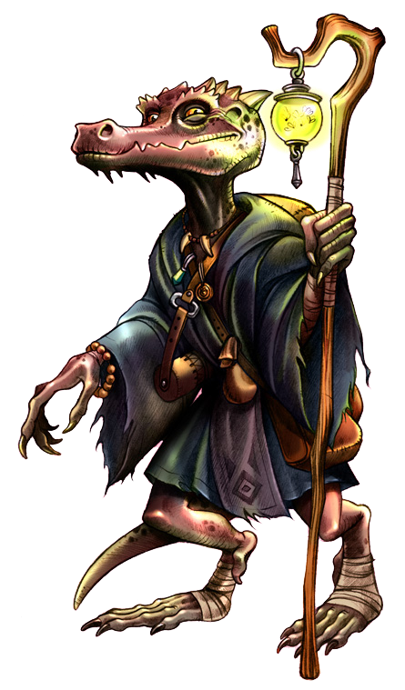

A Dungeon and Dragons Club in Richmond VA, made up of 7 people who met over Meet-up and now have been playing for over a year. The players take turns being DM's (between campaigns).
They play in a handful of worlds, from Eberron, Forgotten Realms, & Homebrew. This site will cover info from the main game, which all the players play in.
Campaigns we have played. Tyranny of Dragons (both Hoard of the Dragon Queen & The Rise of Tiamat), Saltmarsh (played in the setting of Eberron), The Stone (a homebrewed campaign based in Eberron).
